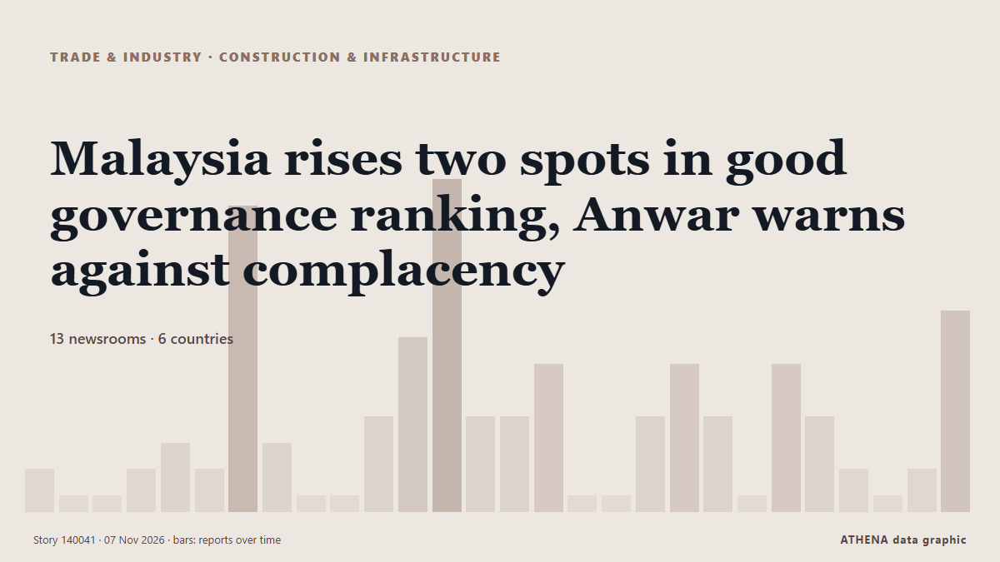

البناء والبنية التحتية
برعايةبرعاية  Cybernetics and Artificial Intelligence Lab Welcome to the Cybernetics and Artificial Intelligence Laboratory, established at the Department of Business Administration of the National and Kapodistrian University of Athens. The lab is headed by Professor Dimitrios Thomakos. The lab aims to do research that can be published in top venues. Our research uses tools and methods of Artificial Intelligence, and lies in the following areas: - Forecasting - Decision making - Cyber security - Finance We are always looking forward to collaborating with exceptional students!
Cybernetics and Artificial Intelligence Lab Welcome to the Cybernetics and Artificial Intelligence Laboratory, established at the Department of Business Administration of the National and Kapodistrian University of Athens. The lab is headed by Professor Dimitrios Thomakos. The lab aims to do research that can be published in top venues. Our research uses tools and methods of Artificial Intelligence, and lies in the following areas: - Forecasting - Decision making - Cyber security - Finance We are always looking forward to collaborating with exceptional students!
| 25 أكتوبر | 0 |
|---|---|
| 26 أكتوبر | 0 |
| 27 أكتوبر | 0 |
| 28 أكتوبر | 0 |
| 29 أكتوبر | 0 |
| 30 أكتوبر | 0 |
| 31 أكتوبر | 0 |
| 1 نوفمبر | 0 |
| 2 نوفمبر | 1 |
| 3 نوفمبر | 6 |
| 4 نوفمبر | 4 |
| 5 نوفمبر | 4 |
| 6 نوفمبر | 3 |
| 7 نوفمبر | 0 |
تُعرض العناوين بالإنجليزية كما نُشرت.

Malaysia rises two spots in good governance ranking, Anwar warns against complacency
نشرته 13 مصدرًا في 6 دول منذ 3 نوفمبر. أول من نشره: Mothership. يقدّر ATHENA الخطر بـ2.2/10 (معتدل)، بثقة 81٪.
Caledonia signs $150m financing for Bilboes Gold Project
Caledonia Mining has entered into an interim financing facility agreement of up to $150m to support the development of the Bilboes Gold Project in Zimbabwe. من Mining Technology
Speedcast Sells Teleport Infrastructure Business to SatPort Infrastructure
Speedcast, a leading connectivity, IT services and edge intelligence provider for remote operations, announced today that it has completed the sale of... من The Maritime Executive
TETFund Raises Concern Over Poor Adoption of Digital Learning Resources in Tertiary Institutions
Kuni Tyessi in Abuja The Executive Secretary of the Tertiary Education Trust Fund (TETFund), Mr. من ThisDay (Nigeria)
Government reinstates extra payments for workers repairing energy facilities damaged by Russian attacks
The Cabinet of Ministers has decided to reinstate additional payments for energy workers and repair crews restoring facilities damaged by Russian attacks. من Ukrinform (English)
Turkey to decide which Armenian company will restore the historic Ani bridge
ArmInfo. Turkey will announce a tender for the construction of the Ani Bridge. من Arminfo
Billions pour into stadia
How EAC nations are investing for AFCON DAR ES SALAAM: TANZANIA, Kenya and Uganda are investing heavily in modern sports infrastructure ahead of the 2027 Africa Cup of Nations (AFCON), combining new… من Daily News
Russia attacks energy infrastructure and delivery service warehouse in Odesa Oblast
Russian strikes have targeted southern Odesa Oblast, causing damage to energy infrastructure, a delivery service warehouse and a medical device manufacturer’s offices. من Ukrainska Pravda (English)
2026 Belt and Road Media Cooperation Forum launches Fuzhou Initiative
The 2026 Media Cooperation Forum on Belt and Road is being held in Fuzhou, southeast China's Fujian Province, on Tuesday, bringing together more than 200 foreign representatives from 100 countries… من Tehran Times
The Ionian Center: A Place of Worship, Memory, and Culture in the Athens Area
The official opening of the Ionian Center was celebrated on the afternoon of November 4 in its packed Culture and Youth hall in the Nea Ionia municipality near Athens in the presence of Archbishop… من The National Herald
Bridge DC appoints Drew Chen as co-CEO
Chen to work alongside existing CEO Eric Fan. من Data Center Dynamics
Russia dismantles infrastructure of VasyGrek cybercrime group, detains three suspects
Russia's Interior Ministry said Monday that police had dismantled the group's infrastructure and identified its suspected members following an investigation conducted with assistance from… من The Record (Recorded Future News)